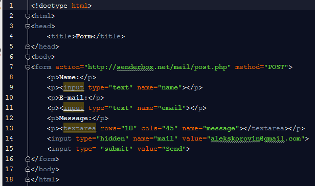
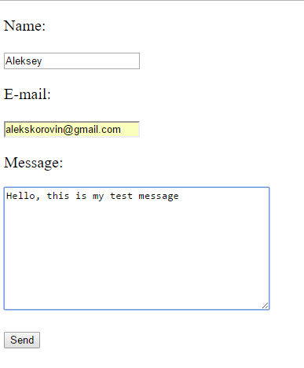
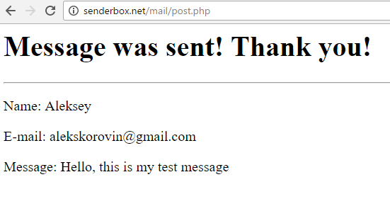
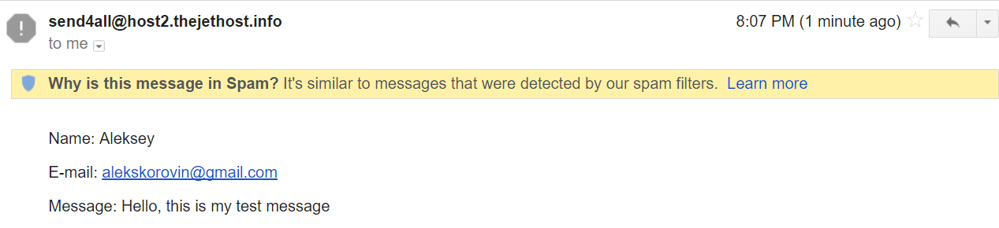

Формы используются для отправки данных которые ввёл пользователь. Они могут быть использованы как интерфейс для веб-приложения отправляющий данные в Интернет.
Сами по себе формы не особо полезны. Они предназначены для работы совместно с серверным приложением, которое обрабатывает полученные с помощью HTML-формы данные. Серверное приложение написано на одном из серверных языков, например .NET, PHP, Ruby, JAVA и других.
Основные теги используемые в HTML формах это:
- form — контейнер и сама форма.
- input — поле ввода (может быть нескольких типов).
- textarea — многострочное поле ввода.
- select — элемент для выбора из списка.
- option — элемент списка тега <select>.
select и option используются в структуре аналогичной спискам ul и li.
form
Элемент form определяет форму внутри этого тега.
атрибут action
Если предполагается отправка данных пользователя серверному скрипту, для тега обязателен атрибут action, значением атрибута action будет путь к серверному скрипту, который обработает полученные данные.
атрибут method
Атрибут method говорит форме, как должны отправляться данные:
- методом get (установлен по умолчанию) — в этом случае отправка данных видна в поле URL (там где вы видите адрес страницы сайта). Обычно метод GET используется для получения (get) данных.
- методом post — в этом случае отправка данных не видна пользователю (данные можно увидеть только используя панель для разработчика)
Метод get служит для отправки небольшого количества данных, которые не особо важны, т.к. их можно увидеть в адресной строке. Вы можете увидеть информацию отправляемую с помощью формы веб-сайта на странице результата поиска.
Метод post используется для отправки приватных данных, например в случае контакных форм, где отправляется почтовый адрес либо телефон пользователя.
Использование
В HTML-коде, форма выглядит следующим образом:
<form action="serverscript.php" method="post">
</form>
атрибут name
Чтобы отличить данные относящиеся к тому или иному полю, существует атрибут name добавляемый к каждому элементу формы с заполненной информацией. Этот атрибут содержит имя поля, под этим именем информация поступает на сервер.
See the Pen html form input name by Aleksey Korovin (@alekskorovin) on CodePen.
input
Тег input это король всех форм. Существует целый список типов элементов форм обозначаемых тегом input. Наиболее распространенные варианты использования тега:
<input type="text" />или просто<input>— это стандартное текстовое поле.
Если он используется в роли текстового поля, он должен содержать атрибут value, значением которого может быть начальное значение для текста.See the Pen html form input type text by Aleksey Korovin (@alekskorovin) on CodePen.
See the Pen html form input type text value by Aleksey Korovin (@alekskorovin) on CodePen.
Атрибутом size можно задавать ширину поля соответствующую количеству символов. В принципе рекомендуется задавать ширину в CSS а не в HTML.See the Pen html form input size by Aleksey Korovin (@alekskorovin) on CodePen.
Задать максимальное количество вводимых символов можно используя атрибут maxlength:See the Pen html form input maxlength by Aleksey Korovin (@alekskorovin) on CodePen.
В современных браузерах и Internet Explorer 10+ есть поддержка атрибута placeholder (подсказка поля), значением которого является временный текст, отображающийся в текстовом поле до того момента, пока пользователь не начнет вводить текст в это поле.See the Pen html form input type text placeholder by Aleksey Korovin (@alekskorovin) on CodePen.
В современных браузерах и Internet Explorer 10+ для текстового поля можно задать атрибут autofocus на одном из полей формы, и сделать этот элемент активным сразу при загрузке страницы:
See the Pen html form input type text placeholder by Aleksey Korovin (@alekskorovin) on CodePen.
-
<input type="password" />— поле для ввода пароля, сходное с обычным текстовым полем, однако в этом типе поля все буквы заменяются на звёздочки либо другие символы и скрыты от польователя. Для этого поля так же использутся атрибуты value, size, maxlength, placeholder, autofocus. Если атрибут value содержит какой-то текст, в браузере отображаться будут звёздочки либо другие символы заменяющие настоящие буквы.See the Pen html form input type password placeholder by Aleksey Korovin (@alekskorovin) on CodePen.
-
<input type="checkbox" />— чекбокс или «галочка», это переключатель с двумя состояниями: выключен или включен. Начальное включенное состояние задаётся атрибутом checked со значением или без checked. Если переключатель включен, то с формой отправляется значение заданное в атрибуте value.See the Pen html form input checkbox by Aleksey Korovin (@alekskorovin) on CodePen.
-
<input type="radio" />— переключатель или «радиобаттон» (радио-кнопка), сходный с чекбоксом переключатель, за исключением того, что он используется в группе переключателей и пользователь может выбрать только одну радио-кнопку из группы. Так же может содержать атрибут checked. Чтобы объединить в группы радио-кнопки, достаточно задать одинаковое имя для этих полей с помощью атрибута nameSee the Pen html form input radio by Aleksey Korovin (@alekskorovin) on CodePen.
-
<input type="submit" />— это кнопка которая по нажатию на неё отправляет форму, в этом типе поля атрибут value содержит в себе текст отображающийся внутри кнопки, атрибут name здесь не нужен. Так же для отправки формы можно использовать кнопку обозначенную тегом <button> —<button>Кнопка для отправки формы</button>.See the Pen html form input submit, button for submit by Aleksey Korovin (@alekskorovin) on CodePen.
-
<input type="hidden" />— это скрытое поле с заданными именем в атрибуте name и значением в атрибуте value, используется для отправки данных которые необходимы но должны быть скрыты от глаз пользователя, например уникальный идентификатор формы. -
<input type="file" />— это поле для загрузки файлов, не очень хорошо поддаётся стилизации с помощью CSS. После загрузки файла отображает имя файла.See the Pen html form input name file by Aleksey Korovin (@alekskorovin) on CodePen.
textarea
textarea — это многострочное поле ввода текста. Количество строк и колонок в этом поле можно задавать используя атрибуты rows (строки) и cols (колонки). Так же рекомендуется задавать размеры с помощью CSS: используя свойства width (ширина) и height (высота).
See the Pen textarea cols rows by Aleksey Korovin (@alekskorovin) on CodePen.
Предпочтительнее использовать атрибут rows и не использовать cols (задавая ширину в CSS), либо все размеры проставлять в CSS.
See the Pen textarea cols rows by Aleksey Korovin (@alekskorovin) on CodePen.
Всё что находится между открывающим и закрывающим тегами является начальным значением текстового поля.
Так же с IE10+ в браузерах есть поддержка атрибута placeholder и атрибута autofocus для textarea:
See the Pen textarea placeholder by Aleksey Korovin (@alekskorovin) on CodePen.
select
Тег select — раскрывающийся список или селект (select - выбор) работает в связке с тегами option и служит для создания выпадающих списков для выбора. Атрибут name необходимо задавать на эелемент select.
See the Pen Select by Aleksey Korovin (@alekskorovin) on CodePen.
Когда форма отправляется, будет отправлено значение (атрибут value) выбранного элемента option, если value не задано, будет отправлен текст, заключённый внутри элемента option.
Если в элементе option есть атрибут selected, то этот элемент будет изначально выбран.
See the Pen Select selected by Aleksey Korovin (@alekskorovin) on CodePen.
Если есть возможность выбора нескольких элементов, для тега select проставляется атрибут multiple, при этом внешний вид элемента меняется.
See the Pen Select selected multiple by Aleksey Korovin (@alekskorovin) on CodePen.
Задание
- Скачать на рабочий стол файл form.html.
-
Открыть его в редакторе кода:
 - В строке 14 изменить email на свой и сохранить файл.
-
Открыть form.html в браузере, заполнить поля и нажать на кнопку Send.
 -
Убедится что форма отправлена, прочитав подобное сообщение:
 -
Открыть свой почтовый ящик и проверить пришедшее сообщение, в некоторых случаях оно попадает в папку спам:
